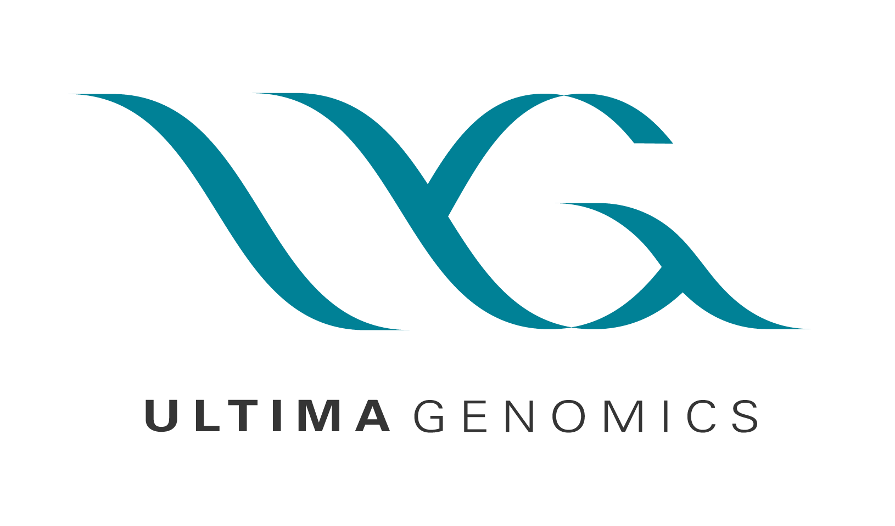

Cisco
Interning as Cisco was a life-changing experience.
I grew so much interning at Cisco. My interpersonal, soft, technical, problem solving, and time management skills all saw a considerable growth spurt. I was surrounded by so many talented, passionate, and supportive people. Although I learned many lessons, the number one thing that I learned is to create a voice for myself and to ask for what I want. Before I get to what I was working on, I really want to highlight the great times I had with the intern cohort. Work is work obviously, but I think it's equally important to have fun and connect with others at work. It's safe to say my summer at Cisco was a summer I will never forget. I went sky-diving, became an Intern Ambassador, and most importantly, I woke up everyday looking forward to my day. The best part of any of my
Project 1: Internal Dashboard Tool for Excess and Obsolete
- 750M+ of Excess Parts
- 70%Time Saved
- 60+ Business Units Impacted
Situation
- Context: Cisco is an enterprise networking hardware and software company. Since they don't manufacture any of their own products, their supply chain has to be robust and efficient in order to fulfull customer needs.
- Because of Covid-19, an overwhelming amount of excess parts was left in inventory, with a value of $750 million towards Cisco's bottom line
- The department E&O (Excess and Obsolete) is in charge of handling the mitigation of these excess parts
- Due to the sheer volume, mitigation processes were taking longer, causing missed opportunities, and thus required solutions to help speed up their internal processes
Task
- I was put on a team with 4 other interns with varying skills: Business Analysts, Data Analyst, and a Software Engineer in order to develop a single source of truth for E&O Stakeholders
- I took the role of team leader and structured the project from an end-to-end solution. Furthermore, I contributed as an Individual Contributer, helping the software engineer produce the tool.
Action
- Collaborated cross-functionally with Product Operations, Engineering, and several Business units
- Conducted 20+ user interviews with subject matter experts and key users
- Gathered product requirements and iterateddesigns and features
- Developed automated risk analysis tool that measured the risk of each part based on past performance and history
Result
- Presented the impact of our solution to Supply Chain Executives on Cisco Live TV
- Acheieved a 70% Time Reduction on mitigation process (Timed old versus new process)
- Detailed Documentation on how to implement solution into existing website
Project 2: Increasing Accuracy of Demand Forecasting AI
- 3% Increase in Forecasting Accuracy
- 15+Streams altered
- 1 New Stream Selection Strategy based on Market Portfolio Theory
Situation
- Cisco's Supply Chain uses a Forecasting AI based on decision Trees in order to predict the amount of demand of each Product Level ID
- Due to COVID-19, the AI was producing less than desirable results due to an influx of demand
Task
- Get an understanding of how the Forecasting AI works and what could be done to improve the current accuracy rating
- Research statisical methods to infer a more accurate prediction strategy
- Put simply, the Forecasting AI had multiple streams that would branch based on feature selection
- At the end of the stream, the path that a PLID would take would be the stream chosen for the AI
Action
- Instead of taking a single stream, I researched and tested the benefits of congregating multiple streams
- Backed by a financial analysis called Market Portfolio Theory and A/B Testing, I developed a strategy to take multiple streams and take the mean of their results
- I wrote code in python that would handle this distribution and allocation and handed the analysis over to the Forecasting team for testing
Result
- A 3% increase in forecasting accuracy over the FY22-FY23 timespan
- Presented findings to key stakeholders, showing impact to demand forecasting
- A rethinking in the stream selection process and how PLID's should be accounted for
Project 3: Documenting Process Flow for Cisco Meraki
Situation
- Cisco Meraki's Supply Chain runs extremely efficiently, they have a 97% same or next day fulfillment rate due to their internal process flows.
- Cisco would like to emulate this level of success in their own Supply Chain Operations
- As the start of a long supply chain transformation, we lay the foundation by documenting Cisco Meraki's processes
Task
- Document Cisco Meraki's Supply Chain process flow across the 5 distribution centers
- Note the exact processes, from data communications and physical hand-offs
Action
- Group of 4 interns to handle their own process flow for their respectively assigned sites.
- Interview Supply Chain Managers from Cisco Meraki
- Created a barebones process flow model for the other interns to utilize
Result
- Mapped the supply chain process flows for Cisco Meraki
- Discovered Key Insights into the 97% same/next day fulfillment rate
- Laid the foundation for Cisco's supply chain transformation
Jabil
Working at Jabil really opened my eyes to the field of software development and how to navigate a large company structure. I was brought on board a bit later than the rest of the intern cohort, but here is where I learned to be a self-starter and to do things on my own. This is the attitude I carried with my to Cisco and why I took on the stretch assignments that I did.
Project 1: Migration to new MES Software
- 20000+ Facility Assets
- 33%Time Saved
No one at Jabil was expecting me to help out with this project. The migration to the new ERP was my only responsiblity, but during my breaks I would wander around the building. Since I started a bit later, I wasn't as close with the initial intern cohort, but I still made small talk from time to time. Anyway, this one day as I was wandering, I noticed a couple of mechanical keyboards poking out of the door. It was a hobby I had recently picked up and from the glance I had, they looked like really nice keyboards. From there, I made friends with the software development manager and asked what project he was working on. We hit if off immediately and not long after, I found myself immersed with the experience I had been seeking.
Project 1: Migration to new MES
This was my main project, which was ensuring quality data migration of the transition of the new MES (Manufacturing Execution System) which was tied to their existing ERP. I was brought on board for 6 weeks, in which my manager didn't expect to finish as he had scheduled this part of the project to be 9 weeks. I had created data maps for the facility assets and how that would be translated into the new MES and cleaned the data of redudancies.
Project 2: Feature Launch of Internal Software
Since the product being built was an internal software and the development team was small, it was a lot easier to brainstorm ideas and get the ball rolling. It was really cool to get the chance to work on something that would be used by the individuals I would be interacting with. I managed the development and launch of three features for their internal project management software, implementing employee verification with Okta Sessions API, creating a dyanmic timeline where you can block tasks, and a ticket issuing system akin to Jira.
Key Takeaways
- Don't be afraid to start conversations with people outside of your business function
- Make yourself stand out by going the extra mile!
Start-ups
-

Ultima Genomics
-

Mill (Formerly Chewie Labs)
First time being in the "real" workforce
Over the course of fall to winter 2021, I had the opportunity to work as a contract manufacturing technician for two start-ups. This coupled with the reunion of my old friend had sparked some passion for me to get industry experience. I first started doing contract work at Ultima Genomics, where I was also surrounded by talented and young engineers. I was a sponge, absorbing all the knowledge I could of their words of wisdom. This is where I learned how to think on your feet, make quick but effective decisions, and operate within an extremely fast paced environment.
Stepping away from work
Working at Mill was also a pleasure. Mill was founded by ex-Google employees so it was extremely insightful talking to them about why they decided to leave and start their own company. It was refreshing to see the passion and spark in someone's eyes when they were talking about something they were truly passionate about. I also hit it off with the people behind Mill (was even offered a technician role), but during this point of my life, I decided to step away from technician work and really focus in on taking the CS courses offered by community college. Within one semester, I had filled out the CS minor requirements by taking intro to CS, data structures and algorithms, discrete math, and calculus. That summer after the semester had ended is when I started working at Jabil. Despite the offer, it was at this point where I had decided where my future career goals would lie.